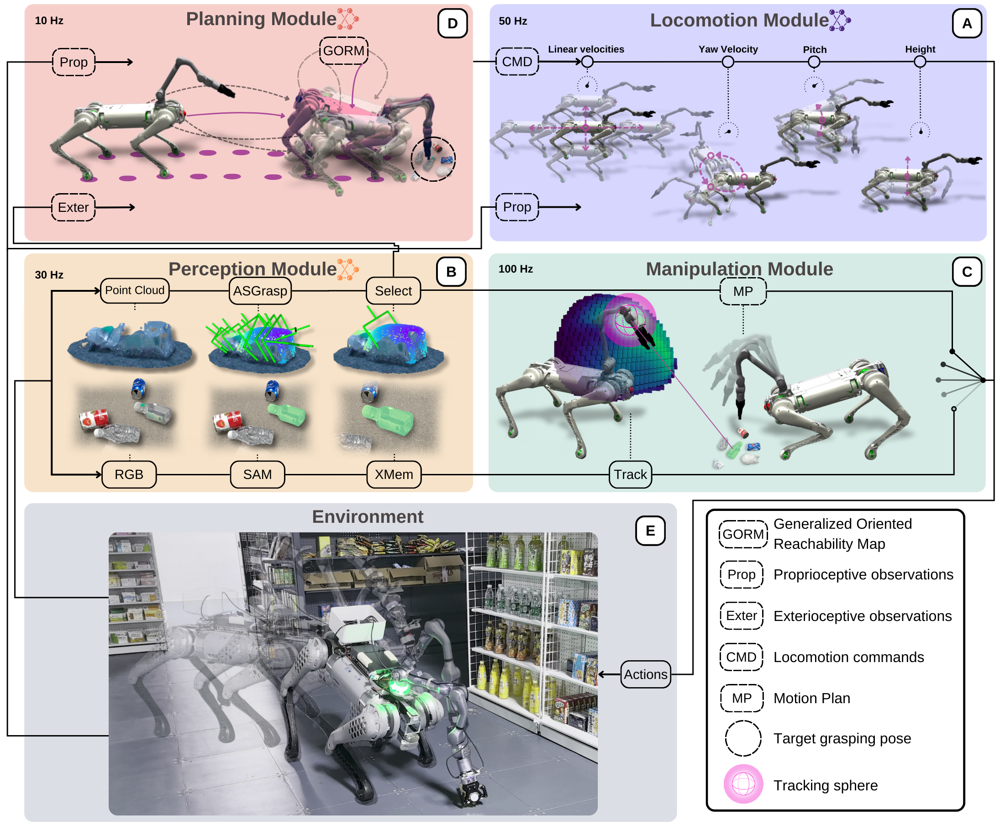

Legged robots with advanced manipulation capabilities have the potential to significantly improve household duties and urban maintenance. Despite considerable progress in developing robust locomotion and precise manipulation methods, seamlessly integrating these into cohesive whole-body control for real-world applications remains challenging. In this paper, we present a modular framework for robust and generalizable whole-body loco-manipulation controller based on a single arm-mounted camera. By using reinforcement learning (RL), we enable a robust low-level policy for command execution over 5 dimensions (5D) and a grasp-aware high-level policy guided by a novel metric, Generalized Oriented Reachability Map (GORM).
The proposed system achieves state-of-the-art one-time grasping accuracy of 89% in real world, including challenging tasks such as grasping transparent objects.
Through extensive simulations and real-world experiments, we demonstrate that our system can effectively manage a large workspace, from floor level to above body height, and perform diverse whole-body loco-manipulation tasks.
Pipeline

First, we train a teacher-student 5D low-level policy in simulation (A).
The perception module (B) then continuously tracks the object,
and generates grasping pose guiding manipulation module (C).
This pose is also utilized by the planning module (D) to command the locomotion policy.